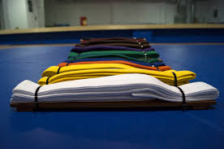

belts are the way of signifhying rank and respect to a person. the hier the belt the more respect you get but the ultimet feat is becoming a black belt. when you are a blacke belt (acording to my school) you are responsibal of teching the pepole of lower rank now it can be difrent for difrent schools (just know that i am geting this informashon frome my own expereace). when you go to a difrent dogo or studeo then the bellt rakes mite be difrent juging how long it will take to become a black belt also ther are two belts that allwase stays the same thwy are the black belts and white belt the white belt is what we call the beganing. yong grass hoper come with me if you want to live that tipe of stuf. you hafe to start somwer.